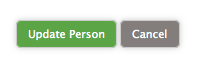
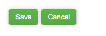
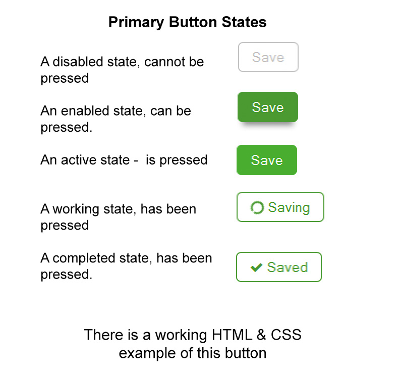

The buttons below are wrong - the primary and secondary action buttons should not both be green.

This button is wrong - it has shading and an emboss..
Below is an example of an interactive button which is only pressable when there is an entry made into the input box. Click on the image or here to see this in action.
